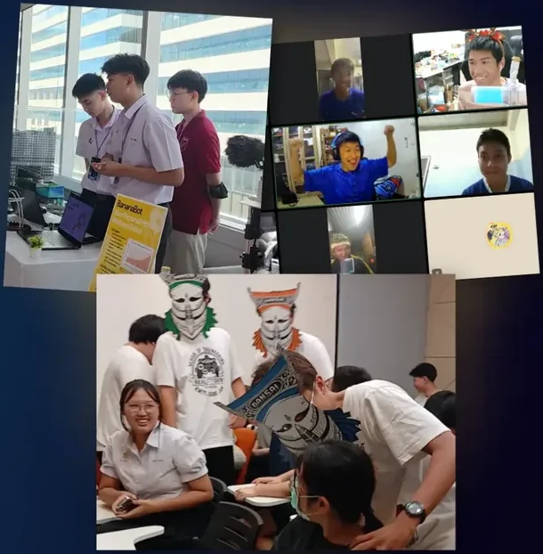

ผลงานปี 2569
ผลงานจริงของน้องๆ Hamster Hub
10 เกมเด่นปี 2569 คัดจาก 37 ผลงาน ของผู้สร้าง 80 คน
ทุกชิ้นบอกชื่อน้องที่สร้าง และกดดูหน้าผลงานเต็มได้
Hamster Hub
ผลงานที่ใช้ได้จริง ขายได้จริง และพาน้องไปถึงมหาวิทยาลัยที่ใช่ ด้วยเกม แอป และ IoT
พอร์ตโฟลิโอ
ทำเกมและแอปเก็บเข้าพอร์ต ซ้อมนำเสนอกับอาจารย์มหาวิทยาลัย
รุ่นพี่ DEK69 ติดแล้ว 48 คน
สตาร์ทอัพ
4 ขั้น ตั้งแต่ออกแบบนวัตกรรม จนต่อยอดเป็นธุรกิจที่มีรายได้
Mr. City ขายให้สวนสัตว์สงขลาแล้ว
ข้อมูลจาก 2025 Success Story ของ Hamster Hub
รุ่น DEK69 ที่ใช้ผลงานจาก Hamster Hub ยื่นรอบ Portfolio
จัดกิจกรรมร่วมกับ


ทุกคอร์สจบด้วยผลงานจริงที่เอาไปใช้ได้ ทั้งยื่นมหาวิทยาลัย ลงแข่ง และต่อยอด
คอร์สทำพอร์ตเกม 2 เดือน สำหรับน้อง ม.6 ที่ยังไม่มีพอร์ต
5,990 บาท9,990
เปิดรับเป็นรอบ กดรับแจ้งเตือนทาง LINE เมื่อเปิดรอบใหม่
บอกทีมว่าน้องเรียนชั้นไหนและอยากไปทางไหน ทีมจะแนะนำให้
หน้าแรก › คอร์สทั้งหมด › Port Express
สำหรับน้อง ม.6 ที่ยังไม่มีพอร์ต จบ 2 เดือนได้เกม 3 เกมพร้อมยื่นรอบ Portfolio
แบ่งเป็น 3 ระดับ เหมือนเลื่อนขั้นในเกม เริ่มจากทำเกมแรกให้สนุก จนถึงทำเกมใหญ่เป็นทีม ทุกหัวข้อสอนด้วยโปรแกรม Unity ที่สตูดิโอเกมใช้จริง
StressStrike โดยน้องวิน ได้รางวัลชนะเลิศ OBEC Roboplayground และเข้ารอบสุดท้าย TICTA นี่คือระดับงานที่น้องจะได้ทำ
รุ่น DEK69 ติดแล้ว 48 คน ที่ สจล. 24 คน มหิดล 9 คน จุฬาฯ 8 คน และเกษตรศาสตร์ 7 คน ตัวอย่างบางส่วน
ได้ ระดับ 1 เริ่มจากศูนย์ สอนตั้งแต่ใช้โปรแกรม Unity และคิดเกมให้สนุก ก่อนขยับไปทำงานที่ยากขึ้น
เนื้อหาครบทุกหัวข้อเท่ากัน คอร์ส Standard เรียน 5 เดือน ราคา 9,990 บาท ส่วน Port Express อัดให้จบใน 2 เดือน ราคา 5,990 บาท สำหรับน้อง ม.6 ที่เวลาก่อนยื่นพอร์ตเหลือน้อย
ทีมจะทัก LINE ไปคุยเป้ามหาวิทยาลัยกับตารางเรียนก่อน ตกลงกันแล้วค่อยชำระเงินงวดแรก
มีหัวข้อฝึกนำเสนอโดยตรง และอาจารย์มหาวิทยาลัยจะฟังผลงานทุก 2 สัปดาห์ พร้อมซ้อมสัมภาษณ์ก่อนยื่นจริง
ต้องไปแข่งคะแนนสอบกับคนทั้งประเทศแทน ทั้งที่คณะเกมและดิจิทัลหลายที่รับรอบ Portfolio เป็นหลัก และที่นั่งรอบหลังเหลือน้อย
คอร์สมีจุดตรวจงาน 5 ครั้ง แต่ละครั้งมีคำแนะนำว่าผ่านอะไรแล้ว ต้องแก้อะไร ถามความคืบหน้ากับทีมทาง LINE ได้ตลอด
ทีมจะแจ้งรูปแบบและเวลาเรียนตอนคุยทาง LINE ก่อนจ่ายเงิน ถามได้เลยที่ @smart-school
ติดตามก่อนใครได้ทาง LINE หรือ Facebook ของ Hamster Hub
ค่าย เวิร์กชอป การแข่งขัน งานโชว์ผลงาน และโครงการระยะยาว ตลอดทั้งปี ทุกงานน้องได้ลงมือสร้างของจริง
14 พ.ย. 2569 ที่ IoTE สจล. ลาดกระบัง ทีมที่ผ่านรอบออนไลน์นำผลงานจริงมานำเสนอต่อคณะกรรมการ
อีก 0 วันดูรายละเอียดงาน2–5 วัน ทำผลงานให้เสร็จพร้อมรุ่นพี่ดูแล
เรียนทักษะเฉพาะเรื่องในวันเดียว
สร้างผลงานในเวลาจำกัด แล้วนำเสนอต่อกรรมการ
ทำโปรเจกต์ส่งเวทีระดับประเทศหลายเดือน
10 ผลงานเด่นของปี กดที่ผลงานเพื่อดูคลิป
ผลงานปี 2569
10 เกมเด่นปี 2569 คัดจาก 37 ผลงาน ของผู้สร้าง 80 คน
ทุกชิ้นบอกชื่อน้องที่สร้าง และกดดูหน้าผลงานเต็มได้
เลื่อนขึ้นเพื่อดูผลงานถัดไป
@วิน นายอัศวิน วิทูรย์ นิตยวรรธนะ
เกมที่น้องสร้างเองในคอร์สของ Hamster Hub
ผลงานปี 2569ได้รางวัล OBEC Roboplaygroundเข้ารอบสุดท้าย TICTA

@กัปตัน นายเพชรรัตน์ โกรเพ็ชร
เกมที่น้องสร้างเองในคอร์สของ Hamster Hub
ผลงานปี 2569ภาพจากในเกม

@ไผ่ นายณัฐภัทร์ ผลพิบูลสุนทร
เกมที่น้องสร้างเองในคอร์สของ Hamster Hub
ผลงานปี 2569

@ดินสอ นายชสาส เล่ามาขาว
เกมที่น้องสร้างเองในคอร์สของ Hamster Hub
ผลงานปี 2569

@เพชร นายสุวิจักษณ์ จันทร์รุ่งวิจิตต์
เกมที่น้องสร้างเองในคอร์สของ Hamster Hub
ผลงานปี 2569ภาพจากในเกม

@นนท์ นายธนดล นนสิทธิ์
เกมที่หยิบ "ผีกระหัง" จากเรื่องเล่าผีไทยมาเป็นตัวเรื่อง
ผลงานปี 2569ภาพจากในเกม

@Windy นายทัศน์ เล่าพัฒนาเกษม
เกมที่น้องสร้างเองในคอร์สของ Hamster Hub
ผลงานปี 2569ภาพจากในเกม

@โอม นายวรวิช รุ่งปิน
เกมที่น้องสร้างเองในคอร์สของ Hamster Hub
ผลงานปี 2569ภาพจากในเกม

@ฟาร์ นายรามิตร บุตรลักษณ์
เกมที่น้องสร้างเองในคอร์สของ Hamster Hub
ผลงานปี 2569

@เป๊ป นายคชพล จิรธรานนท์
เกมที่น้องสร้างเองในคอร์สของ Hamster Hub
ผลงานปี 2569
ยังมีอีก
NSC คือการแข่งขันพัฒนาโปรแกรมคอมพิวเตอร์แห่งประเทศไทย (National Software Contest)
รุ่นพี่ทั้งหมด 48 คน ด้านล่างคือคนที่ประกาศโปสเตอร์แล้ว 17 คน
NSC คือการแข่งขันพัฒนาโปรแกรมคอมพิวเตอร์แห่งประเทศไทย ผลงานของน้องๆ เข้ารอบชิง 12 ผลงาน


ไม่ได้หยุดแค่ในห้องเรียน ผลงานเหล่านี้มีคนใช้หรือซื้อไปแล้ว
เกมส่งเสริมการท่องเที่ยวสงขลา ขายให้สวนสัตว์สงขลาแล้ว
เกมสอนเขียน Python ใช้สอนเด็กไปแล้วกว่า 1,000 คน
แพลตฟอร์มเรียนแบบเกม กำลังเตรียมใช้กับมหาวิทยาลัย
เปลี่ยนการออกกำลังกายตอนเย็นให้เป็นเกม
ผลงานที่ใช้ได้จริง ขายได้จริง และพาไปถึงมหาวิทยาลัยที่ใช่ เราสอน พาสร้าง และพาลงเวทีจริง ตั้งแต่เกม แอป จนถึง IoT

เกมส่งเสริมการท่องเที่ยวสงขลา ขายให้สวนสัตว์สงขลาแล้ว
เกมสอน Python ใช้สอนเด็กไปแล้วกว่า 1,000 คน
ชนะเลิศ OBEC Roboplayground และเข้ารอบสุดท้าย TICTA
แพลตฟอร์มเรียนแบบเกม กำลังเตรียมใช้กับมหาวิทยาลัย

จัดกิจกรรมร่วมกับ
ถามเรื่องคอร์ส กิจกรรม หรือการร่วมงานได้ทาง LINE